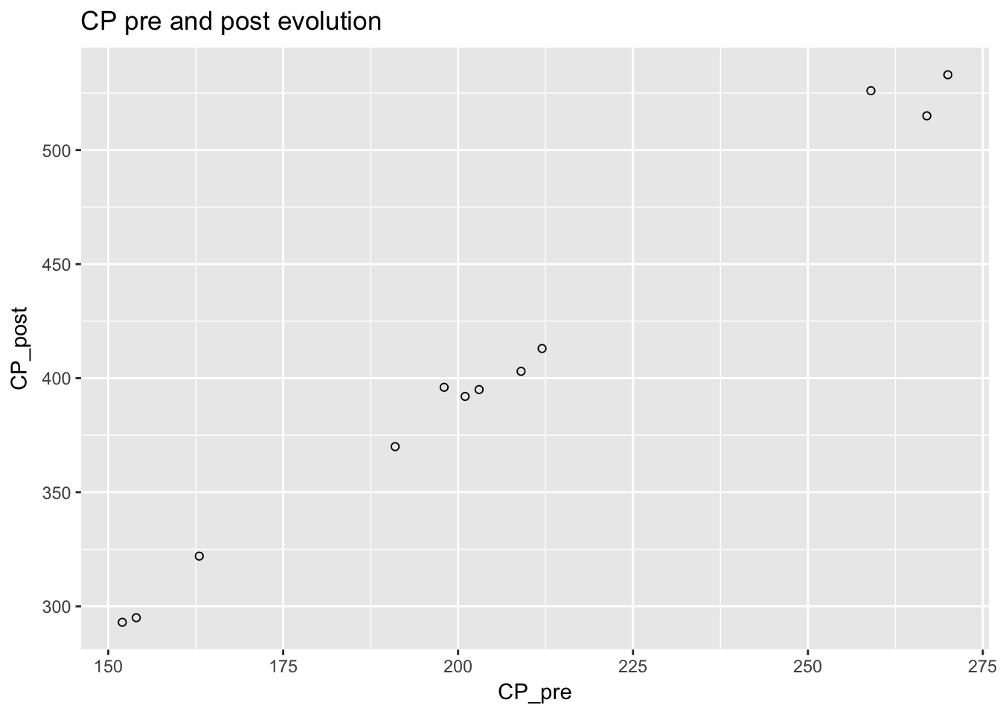
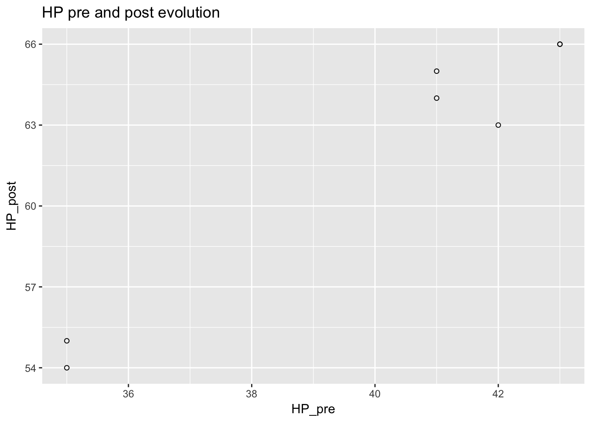

I was evolving some Pokemon in Pokemon Go today and wondered how much the Pokemon’s attributes change after evolution. The attributes of interest were combat power (CP) and hit points (HP). I focused my analysis from Pidgeys because I had the most data points for this species.
I collected data from one day’s evolution, available for viewing here.
x <- read.csv("../datasets/evolution.csv")
x <- tbl_df(x)
pidgeys <- filter(x, pokemon == "Pidgey")
pidgeys## # A tibble: 12 × 7
## pokemon CP_pre HP_pre kg_pre CP_post HP_post kg_post
## <fctr> <int> <int> <dbl> <int> <int> <dbl>
## 1 Pidgey 270 NA NA 533 NA NA
## 2 Pidgey 267 NA NA 515 NA NA
## 3 Pidgey 259 NA NA 526 NA NA
## 4 Pidgey 212 NA NA 413 NA NA
## 5 Pidgey 209 43 2.20 403 66 36.70
## 6 Pidgey 203 41 1.18 395 64 19.75
## 7 Pidgey 201 43 1.70 392 66 28.38
## 8 Pidgey 198 41 2.26 396 65 37.72
## 9 Pidgey 191 NA NA 370 NA NA
## 10 Pidgey 163 42 1.08 322 63 18.07
## 11 Pidgey 154 35 1.35 295 55 22.47
## 12 Pidgey 152 35 2.50 293 54 41.63Question 1: What is the relationship between CP before and CP after evolution?
To explore what happened to CP before and after evolution, I plotted these on a graph.
library(ggplot2)
ggplot(pidgeys, aes(x = CP_pre, y = CP_post)) + geom_point(shape = 1) +
ggtitle("CP pre and post evolution")
The relationship was roughly linear with apparently random variations from the line.
I modeled the relationship using simple linear regression.
pidgey_CP_model <- lm(CP_post ~ CP_pre, data = pidgeys)
summary(pidgey_CP_model)##
## Call:
## lm(formula = CP_post ~ CP_pre, data = pidgeys)
##
## Residuals:
## Min 1Q Median 3Q Max
## -11.796 -2.865 -1.633 1.562 15.409
##
## Coefficients:
## Estimate Std. Error t value Pr(>|t|)
## (Intercept) -14.03520 11.58352 -1.212 0.253
## CP_pre 2.02558 0.05509 36.770 5.27e-12 ***
## ---
## Signif. codes: 0 '***' 0.001 '**' 0.01 '*' 0.05 '.' 0.1 ' ' 1
##
## Residual standard error: 7.484 on 10 degrees of freedom
## Multiple R-squared: 0.9927, Adjusted R-squared: 0.9919
## F-statistic: 1352 on 1 and 10 DF, p-value: 5.266e-12Based on the data, the estimated multipler was 2.026 with a standard deviation of 0.055. The model explained roughly 99% of the variation in CP after evolution. Here is the model in equation form.
\[ CP_{post} = 2.02558 \times CP_{pre} - 14.0352 + \epsilon\]
Those numbers were close enough to 2 and -14 to speculate that the Pokemon Go programmers used whole numbers in determining how much CP you get afterwards.
There is a maximum CP for Pokemon, but this might suggest that there is also a minimum CP. If we assume that the programmers would not want the evolved form to have a lower CP than the original form, we could solve for the theoretical minimum CP of a Pidgey.
We set the \(CP_{post}\) to be equal to the \(CP_{pre}\) in the equation and solve for \(CP_{pre}\). Ignoring \(\epsilon\) for simplicity we get:
\[ CP_{pre} = 2.02558 \times CP_{pre} - 14.0352\] \[ -1.02558 \times CP_{pre} = - 14.0352\] \[ CP_{pre} = 13.68513\] Since collecting the original data, I have caught more Pidgeys with lower CP (minimum 21). I will update the analysis once I’ve done their evolutions.
Question 2: How does evolution affect HP?
To view the relationship between pre and post HP, I plotted HP before and after evolution. I did not have as many data points on this attribute.
ggplot(pidgeys, aes(x = HP_pre, y = HP_post)) + geom_point(shape = 1) +
ggtitle("HP pre and post evolution")## Warning: Removed 5 rows containing missing values (geom_point).
There was also a roughly linear relationship but it did not appear to be as linear as the CP before and after.
pidgey_HP_model <- lm(HP_post ~ HP_pre, data = pidgeys)
summary(pidgey_HP_model)##
## Call:
## lm(formula = HP_post ~ HP_pre, data = pidgeys)
##
## Residuals:
## 5 6 7 8 10 11 12
## -0.1544 0.7104 -0.1544 1.7104 -1.7220 0.3050 -0.6950
##
## Coefficients:
## Estimate Std. Error t value Pr(>|t|)
## (Intercept) 4.5598 5.5276 0.825 0.446970
## HP_pre 1.4324 0.1377 10.400 0.000142 ***
## ---
## Signif. codes: 0 '***' 0.001 '**' 0.01 '*' 0.05 '.' 0.1 ' ' 1
##
## Residual standard error: 1.185 on 5 degrees of freedom
## (5 observations deleted due to missingness)
## Multiple R-squared: 0.9558, Adjusted R-squared: 0.947
## F-statistic: 108.2 on 1 and 5 DF, p-value: 0.0001416From these observations it looks like the model is:
\[HP_{post} = 1.4324 \times HP_{pre} + 4.5598 + \epsilon\]
As I wrote above for the CP analysis, I have collected more Pidgeys now and will update this analysis once I have evolved them.
Discussion
There are some other people who have done similar analyses on the relationship between pre and post evolution CP. There are even calculators that provide estimates of the post evolution CP. Here’s one example.
I was not able to find HP evolution analysis, so expanding this analysis could be of novel interest.
Here’s a data set that could be used for cross validation: https://www.openintro.org/stat/data/?data=pokemon